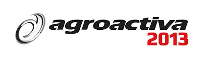

Techner será auspiciante de un nuevo evento de INTA.
"NAPAS: El desafio de contruir soluciones conjuntas".
El evento tendrá lugar el día 22 de Julio a las 8.30 am. en el Auditorio principal de INTA Marcos Juárez. Contará con la diseración de importantes oradores que tratarán en detalle la problemática actual del elevado nivel de napas freáticas. Al final del evento se realizará un taller para discutir propuestas y posibles futuros escenarios.
Los esperamos...
Agro Activa 2014: Techner presente en la muestra más importante del país
La mega muestra con la última tecnología en producción agropecuaria se llevó a cabo del 4 al 7 de junio en el kilómetro 386 de la ruta nacional N° 9. La muestra fierrera por excelencia en lo que respecta al sector agropecuario argentino y latinoamericano. En las últimas ediciones, también ganaron espacio la ganadería, la aviación agrícola, los negocios internacionales, la granja y la capacitación.
Techner nuevamente dijo presente en la muestra del Agro más importante del país.
Expo Agro 2014: Techner presente en una muestra renovada
Se viene una Expoagro fuertemente renovada, más integrada en todos sus espacios y actividades temáticas. Meses atrás, comenzaron los trabajos en un campo con suelo Clase 1, sobre el kilómetro 214 de la Autopista Buenos AiresRosario, entre Ramallo y San Nicolás, y avanzan los preparativos para montar, del 12 al 15 de marzo de 2014, el escenario más representativo del sistema productivo argentino. El eje de las mejoras es el notable acercamiento de las demostraciones dinámicas de maquinarias al sector estático. Esa ubicación, en el corazón de la feria, constituye la perspectiva de que en su próxima edición.
Techner dijo presente en Agro Activa 2013.

Expo Agro Activa 2013 es la muestra agropecuaria a campo abierto más grande del mundo que se desarrolló en Cañada de Gómez, pcia. de Santa Fe, Argentina en el mes de junio, los días 12, 13, 14 y 15.
El atractivo de Expo Agro Activa 2013 radica en la posibilidad de acceder a la mayor oferta de maquinaria agrícola en un mismo lugar para ver, comparar y realizar negocios.
Techner contó con un stand...